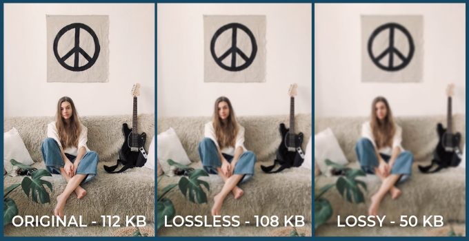
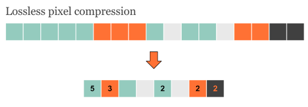

Bestanden nemen veel ruimte in waardoor de harde schijf snel vol raakt. Dit is erg onhandig want om nou heel veel harde schijven te gaan kopen is ook niks. Daarom is er bestandscompressie. Bestandscompressie zorgt ervoor dat een bestand zoals een afbeelding, video of muziek fragment kleiner wordt. Hierdoor raakt je opslag minder snel vol en kan je makkelijker bestanden downloaden of versturen via het internet.
Bij lossy compressie laat hij verschillende stukken van een bestand weg. Bijvoorbeeld bij een plaatje, als je heel veel verschillende tinten van een kleur hebt die het menselijke oog niet kunnen zien, laat hij weg. Hierdoor wordt de ruimte minder maar gaat de kwaliteit wel helaas omlaag. Het verschil in kwaliteit is heel erg klein en het kan toch zo weer meer dan 200 KB verschillen. De lossy compressie wordt weergegeven met jpeg dat wordt afgekort tot jpg.
Bij lossless wordt er geen informatie verwijderd en blijft de kwaliteit hetzelfde. De inhoud van het bestand wordt gewoon slimmer opgeslagen. Als bijvoorbeeld 6 pixels naast elkaar dezelfde kleur hebben, 12 werd het eerst weergegeven met (12, 12, 12, 12, 12, 12). Maar me lossless wordt het (6, 12). Zie als voorbeeld het onderste voorbeeld. Uiteindelijk is een lossy bestand kleiner maar kan je nooit meer terug naar het oude omdat informatie verwijderd wordt terwijl met lossless dat niet is en bij lossless behoud je de kwaliteit en bij lossy niet.
Een geluidsfragment kan snel veel MB kosten en zal dus ook veel opslag innemen. Voor geluidsfragmenten gebruiken ze de lossy compressie. Er wordt dus geluid verwijderd maar net als bij een afbeelding kan er echt wel wat verwijderd worden. Het menselijke gehoor kan namelijk maar tot KHz van 20. Als je ouder wordt zal het echter wat slechter worden of als je gehoorschade hebt. Bij het comprimeren van een stuk tekst wordt dus alles onder bijvoorbeeld 15 KHz weggelaten. Je wil muziek goed kunnen horen dus moet de kwaliteit echt goed zijn. Hoe vaak een sample wordt genomen is dus belangrijk. De hoeveelheid bits per sample wordt bitrate genoemd. De bitrate en de Hz samen vermenigvuldigen de kbps. Vaak wordt muziek opgenomen met een Hz 44100 en er worden 32 bits gebruikt. je krijgt dan dus uiteindelijk een kbps van 44100x32=14112 kbps. Soms zijn verschillen nauwelijks hoorbaar maar scheelt het toch heel erg in de ruimte en kan je veel meer opslaan.
Ook op de laatste pagina heb ik een uitleg filmpje gezet voor als je het toch niet snapte van mijn uitleg.